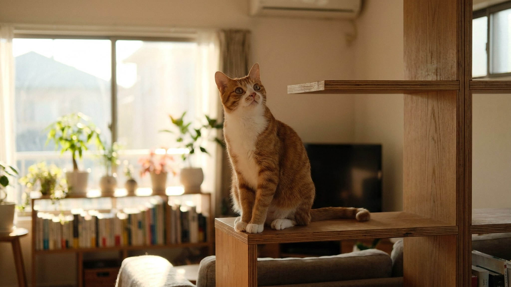

Кошка залезла на холодильник и отказывается спускаться. Другая прячется под диваном. Третья гоняет первые две по квартире. Всё это — симптомы одной проблемы: в квартире не хватает вертикального пространства. Четыре уровня, правильные маршруты и одна деталь с приземлением — и поведение меняется в течение недели.
🐾 Не уверены, что это опасно?
Опишите симптом в AnimaLife — AI-ветеринар за минуту подскажет, что в пределах нормы, а когда пора к врачу.
Кошка — факультативный древесный хищник. Её предок охотился и наблюдал с возвышенностей: это давало обзор, безопасность и стратегическое преимущество. В квартире эта потребность никуда не делась.
Высота для кошки — это:
Идеальная вертикальная структура покрывает четыре функциональных уровня:
Уровень 1 (0–40 см от пола): наблюдение из укрытия. Низкие укрытия с бортами или крышей — коробки, домики, лежанки в нишах. Отсюда кошка наблюдает за происходящим, оставаясь «скрытой». Важно для кошек с высокой тревожностью.
Уровень 2 (40–100 см): переходной этаж. Подоконники, невысокие тумбы, кресла. Это «рабочий» уровень, откуда удобно наблюдать за хозяевами и следить за входом в комнату.
Уровень 3 (100–200 см): основная активная зона. Полки на стенах, кошачьи деревья, шкафы с открытым верхом. Здесь кошка проводит больше всего времени: наблюдает, дремлет, точит когти на вертикальных поверхностях кошачьего дерева.
Уровень 4 (выше 200 см): точки превосходства. Самые высокие точки комнаты — верх шкафов, специальные полки под потолком. Доступ к ним — ресурс. В однокошачьем доме это просто любимое место. В многокошачьем — стратегический актив.
Одна высокая полка без маршрута почти бесполезна — кошка должна иметь возможность подняться и спуститься безопасно. Проектируйте маршруты, а не отдельные точки.
Принципы хорошего маршрута:
Кошки прыгают вниз значительно чаще, чем нам кажется, и приземление — нагрузка на суставы, особенно у пожилых животных и крупных пород. Под каждой высокой полкой должна быть мягкая поверхность для приземления: лежанка, коврик, кресло.
Прыжок с высоты 2 метра на голый пол создаёт ударную нагрузку в несколько масс тела. Для здоровой молодой кошки это обычно не проблема, но для кошки старше 8–10 лет или с избыточным весом — повод для постепенного ограничения высоты и обязательного смягчения приземления.
В многокошачьем доме вертикальная структура напрямую влияет на уровень конфликтов. Причина проста: горизонтальное пространство делится плохо — кошки не могут разойтись, если одна лежит на входе в коридор. Вертикальное пространство легко делится: одна кошка наверху, другая внизу — конфликта нет.
Правило для многокошачьих домов:
🐾 Питомец ведёт себя странно?
AnimaLife расшифрует поведение кошки и собаки и подскажет, что делать. Попробуйте бесплатно прямо в мессенджере.
🐾 Понравился разбор?
Подпишитесь на канал — каждый день разбираем по одному тревожному симптому у кошек и собак: что в пределах нормы, а когда пора к врачу. Подпишитесь, чтобы не пропустить разбор, который может спасти здоровье вашего питомца.
Некоторые кошки сразу обнаруживают полки и начинают ими пользоваться. Другие игнорируют. Если кошка не идёт на новые полки:
Вертикальное пространство — это не роскошь и не декор. Это функциональная среда, в которой кошка чувствует себя безопасно, занятой и уверенной. Четыре уровня с маршрутами меняют поведение быстро — обычно в течение первой-двух недель.